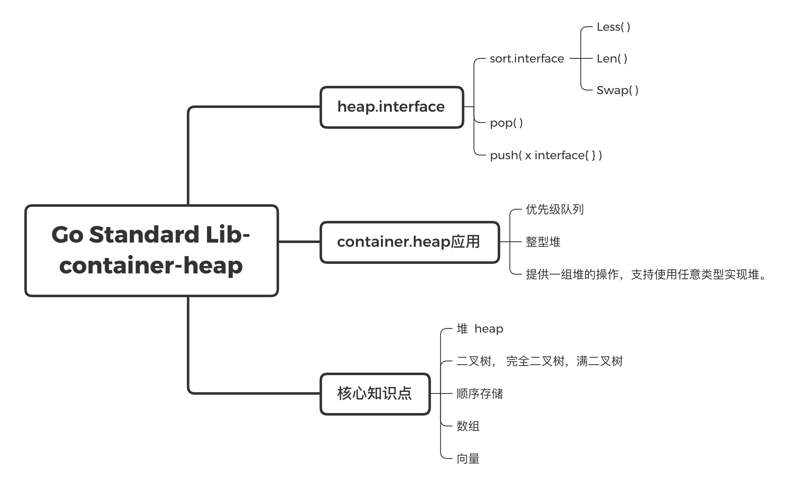

golang 的 container 包中提供了 heap 容器，这个容器可以用来做什么，又是怎么做到的呢？
本文从 go 1.14.2 的源码出发，说明了堆、heap 包、heap 包的用途、heap 包的实现。
先看一组概览，可以看完文章再返回来看这个图加深记忆

1、heap是什么
首先先来解释一下堆 (Heap) 是什么。
据维基百科)
堆（Heap）是计算机科学中一类特殊的数据结构的统称。堆通常是一个可以被看做一棵树的数组对象。在队列中，调度程序反复提取队列中第一个作业并运行，因为实际情况中某些时间较短的任务将等待很长时间才能结束，或者某些不短小，但具有重要性的作业，同样应当具有优先权。堆即为解决此类问题设计的一种数据结构。
逻辑定义：$n$个元素序列 ${k1, k2… ki…kn}$,当且仅当满足下列关系时称之为堆：
(ki <= k2i, ki <= k2i+1), (i = 1, 2, 3, 4... n/2)
或者
(ki >= k2i, ki >= k2i+1), (i = 1, 2, 3, 4... n/2)
堆具有以下特性：
- 任意节点小于（或大于）它的所有后裔，最小元（或最大元）在堆的根上（堆序性）。
- 堆总是一棵完全树。即除了最底层，其他层的节点都被元素填满，且最底层尽可能地从左到右填入。
完全二叉树和满二叉树的区别如下图。

将根节点最大的堆叫做最大堆或大根堆，根节点最小的堆叫做最小堆或小根堆。
由于堆是完全二叉树，所以可以用顺序数组来表示，如下图。

Tips: 记住这两张图，后面会用到。
2、container/heap提供的方法
了解了堆是什么以后，再来看看 container/heap 包。
heap.go 的源码非常简单，加上注释一共才120行。
heap包 为实现了 heap.Interface 的类型提供了堆方法：Init/Push/Pop/Remove/Fix。container/heap 为最小堆，即每个节点的值都小于它的子树的所有元素的值 (A heap is a tree with the property that each node is the minimum-valued node in its subtree) 。
// The Interface type describes the requirements
// for a type using the routines in this package.
// Any type that implements it may be used as a
// min-heap with the following invariants (established after
// Init has been called or if the data is empty or sorted):
//
// !h.Less(j, i) for 0 <= i < h.Len() and 2*i+1 <= j <= 2*i+2 and j < h.Len()
//
// Note that Push and Pop in this interface are for package heap's
// implementation to call. To add and remove things from the heap,
// use heap.Push and heap.Pop.
type Interface interface {
sort.Interface
Push(x interface{}) // add x as element Len()
Pop() interface{} // remove and return element Len() - 1.
}
由于 heap.Interface 组合 sort.Interface，所以，目标类型需要包含如下方法：Len/Less/Swap/Push/Pop。
3、container/heap可以用来做什么
3.1 container/heap 包可以用来构造优先级队列。
以 官方文档中的 example 为例：
// This example demonstrates a priority queue built using the heap interface.
package main
import (
"container/heap"
"fmt"
)
// An Item is something we manage in a priority queue.
type Item struct {
value string // The value of the item; arbitrary.
priority int // The priority of the item in the queue.
// The index is needed by update and is maintained by the heap.Interface methods.
index int // The index of the item in the heap.
}
// A PriorityQueue implements heap.Interface and holds Items.
type PriorityQueue []*Item
func (pq PriorityQueue) Len() int { return len(pq) }
func (pq PriorityQueue) Less(i, j int) bool {
// We want Pop to give us the highest, not lowest, priority so we use greater than here.
return pq[i].priority > pq[j].priority
}
func (pq PriorityQueue) Swap(i, j int) {
pq[i], pq[j] = pq[j], pq[i]
pq[i].index = i
pq[j].index = j
}
func (pq *PriorityQueue) Push(x interface{}) {
n := len(*pq)
item := x.(*Item)
item.index = n
*pq = append(*pq, item)
}
func (pq *PriorityQueue) Pop() interface{} {
old := *pq
n := len(old)
item := old[n-1]
old[n-1] = nil // avoid memory leak
item.index = -1 // for safety
*pq = old[0 : n-1]
return item
}
// update modifies the priority and value of an Item in the queue.
func (pq *PriorityQueue) update(item *Item, value string, priority int) {
item.value = value
item.priority = priority
heap.Fix(pq, item.index)
}
// This example creates a PriorityQueue with some items, adds and manipulates an item,
// and then removes the items in priority order.
func main() {
// Some items and their priorities.
items := map[string]int{
"banana": 3, "apple": 2, "pear": 4,
}
// Create a priority queue, put the items in it, and
// establish the priority queue (heap) invariants.
pq := make(PriorityQueue, len(items))
i := 0
for value, priority := range items {
pq[i] = &Item{
value: value,
priority: priority,
index: i,
}
i++
}
heap.Init(&pq)
// Insert a new item and then modify its priority.
item := &Item{
value: "orange",
priority: 1,
}
heap.Push(&pq, item)
pq.update(item, item.value, 5)
// Take the items out; they arrive in decreasing priority order.
for pq.Len() > 0 {
item := heap.Pop(&pq).(*Item)
fmt.Printf("%.2d:%s ", item.priority, item.value)
}
}
PriorityQueue 本质上是个 *Item 数组，其 Len/Less/Swap 是比较常见的数组用来sort需要定义的函数，而 Push、Pop 则是使用数组来插入、弹出元素的方法。PriorityQueue还提供了 update 方法。注意由于通常希望优先级队列 Pop 出来的是优先级最高的元素，所以 Less 方法是反着写的。
定义了以上方法以后，PriorityQueue就具备了使用container/heap包的条件。
如下代码，先从items map出发定义了一个pq数组，长度为hash的size，并调用heap.Init初始化pq数组；之后向队列中增加了一个优先级为1的元素，并更新该元素的队列；最后从队列中依此Pop，可见元素在Pop时是依照优先级排序的。
// This example creates a PriorityQueue with some items, adds and manipulates an item,
// and then removes the items in priority order.
func Example_priorityQueue() {
// Some items and their priorities.
items := map[string]int{
"banana": 3, "apple": 2, "pear": 4,
}
// Create a priority queue, put the items in it, and
// establish the priority queue (heap) invariants.
pq := make(PriorityQueue, len(items))
i := 0
for value, priority := range items {
pq[i] = &Item{
value: value,
priority: priority,
index: i,
}
i++
}
heap.Init(&pq)
// Insert a new item and then modify its priority.
item := &Item{
value: "orange",
priority: 1,
}
heap.Push(&pq, item)
pq.update(item, item.value, 5)
// Take the items out; they arrive in decreasing priority order.
for pq.Len() > 0 {
item := heap.Pop(&pq).(*Item)
fmt.Printf("%.2d:%s ", item.priority, item.value)
}
// Output:
// 05:orange 04:pear 03:banana 02:apple
}
4、heap是怎么做到的
上面举的例子，可以说很神奇了。container/heap是怎么做到的呢？
4.1、heap.Init
先来看看heap.Init函数。
// Init establishes the heap invariants required by the other routines in this package.
// Init is idempotent with respect to the heap invariants
// and may be called whenever the heap invariants may have been invalidated.
// The complexity is O(n) where n = h.Len().
func Init(h Interface) {
// heapify
n := h.Len()
for i := n/2 - 1; i >= 0; i-- {
down(h, i, n)
}
}
关键点在于 down 函数。
func down(h Interface, i0, n int) bool {
i := i0
for {
j1 := 2*i + 1
if j1 >= n || j1 < 0 { // j1 < 0 after int overflow
break
}
j := j1 // left child
if j2 := j1 + 1; j2 < n && h.Less(j2, j1) {
j = j2 // = 2*i + 2 // right child
}
if !h.Less(j, i) {
break
}
h.Swap(i, j)
i = j
}
return i > i0
}
down 函数的功能非常简单：根据给定的元素类型，需要 down（下沉）的元素在数组中的索引，heap的长度，将该元素下沉到该元素对应的子树合适的位置，从而满足该子树为最小堆的要求。
还记得前面的那张顺序数组表示堆的图吗？结合 down 函数的实现：任选一个元素 i ，将其与它的子节点 $2i+1$ 和 $2i+2$比较，如果元素 i 比它的子节点小，则将元素 i 与两个子节点中较小的节点交换，从而保证满足最小树的要求（第一次down）；子节点 j 可能也有它的子节点，继续比较、交换，直到数组末尾，或者元素 i 比它的两个子节点都小，跳出循环。
为什么元素 i 比它的两个子节点都小，就可以跳出循环，不再继续下去呢？这是由于，在 Init 函数中，第一个开始down（下沉）的元素是第 $n/2 - 1$ 个，可以保证总是从最后一棵子树开始 down（如前图，n=8或者n=9, n/2-1总是为4），因此可以保证调用链 Init -> down 时，如果元素 i 比它的两个子节点都小，那么该元素对应的子树，就是最小堆。
Init 在遍历完毕后，可以保证，待 Init 的数组是一个最小堆。
4.2 heap.Push
再来看看heap.Push是怎么保证插入新元素时，顺序数组仍然是一个最小堆。
// Push pushes the element x onto the heap.
// The complexity is O(log n) where n = h.Len().
func Push(h Interface, x interface{}) {
h.Push(x)
up(h, h.Len()-1)
}
首先调用h.Push将元素推入用户定义的类型，即前述的PriorityQueue。数组append，没什么好说的。由于是将该元素插入到了数组的末尾位置，所以需要调用up函数来“上浮”。
来看看up是怎么上浮的。
func up(h Interface, j int) {
for {
i := (j - 1) / 2 // parent
if i == j || !h.Less(j, i) {
break
}
h.Swap(i, j)
j = i
}
}
很简单，依此查找元素 j 的父节点 i，如果元素 j 比父节点 i 要小，则交换这两个节点，并继续向再上一级的父节点比较，直到根节点，或者元素 j 大于 父节点 i。
如此，可以保证插入新元素的顺序数组在up之后，仍然是一个最小堆。
4.3 heap.Pop
// Pop removes and returns the minimum element (according to Less) from the heap.
// The complexity is O(log n) where n = h.Len().
// Pop is equivalent to Remove(h, 0).
func Pop(h Interface) interface{} {
n := h.Len() - 1
h.Swap(0, n)
down(h, 0, n)
return h.Pop()
}
前面PriorityQueue的 Pop 函数，实际是取了顺序数组的 $n-1$ 子数组，因此 heap.Pop 的目的就是将根节点（0）与末尾节点的元素交换，并将新的根节点的元素 down（下沉）到合适的位置，满足最小堆的要求；最后再调用PriorityQueue的 Pop 函数获取最后一个元素即可。
4.4 heap.Fix
PriorityQueue 的 update 函数在修改元素优先级的时候，实际是靠 heap.Fix 完成的。
// Fix re-establishes the heap ordering after the element at index i has changed its value.
// Changing the value of the element at index i and then calling Fix is equivalent to,
// but less expensive than, calling Remove(h, i) followed by a Push of the new value.
// The complexity is O(log n) where n = h.Len().
func Fix(h Interface, i int) {
if !down(h, i, h.Len()) {
up(h, i)
}
}
代码比较清晰：如果能下沉，则下沉，否则上浮。down的返回值可以表达是否有下沉过（即是否有swap过）。
4.5 heap.Remove
优先级队列的示例中没有使用Remove函数，直接来看代码。
// Remove removes the element at index i from the heap.
// The complexity is O(log(n)) where n = h.Len().
//
func Remove(h Interface, i int) interface{} {
n := h.Len() - 1
if n != i {
h.Swap(i, n)
if !down(h, i, n) {
up(h, i)
}
}
return h.Pop()
}
先将要删除的节点 i 与末尾节点 n 交换，然后将新的节点 i 下沉或上浮到合适的位置。这块逻辑跟Fix是类似的，但注意不能直接调用heap.Fix，最后一个元素是要被删除的，不能参与Fix。
参考资料：